COWMATA PRO / 3.9.6
从数据准备到成果交付
按任务学习，每一步都核对输入、操作与结果。
先在副本中完成一次练习，再进入正式标注。管理员与操作员共用数据和标注规则，按权限开展工作。
本教程离线可用。点击图片查看原图；浏览器打印可另存 PDF。插图包括实测截图与明确标记的示例界面，均不含真实账号凭据。
3.9.6 · 每日协作流程
什么时候下载，什么时候派包
上传器 → 数据准备／端侧数据下载 → 数据归类 → 标注与复核／多人协作
- 先在上传器核对并同步三份 CSV。下载器每轮重新读取台账，按监测目的、佩戴时段和牛号决定健康类别。
- 五项必填完整且九轴、温度有效才下载三类数据；非产犊记录的“/”算已填写，产犊记录必须是真实起止时间。缺项暂存待核对，补齐后下一轮再检查。
- 下载结束后，按数据日期归类录像到牧场根目录的“录像／日期／视角”。三类 JSON 保持在健康类别内。
- 派包默认选择历史日期，核验下载完成记录、CSV 是否变化、Motion／PPG／Temp 是否有效齐全，以及所选视角录像是否覆盖采集时段。任一不符会列明原因并阻止派发。
- ZIP 固定本次清单，不会随着明天的数据自动改变。已派数据默认不重复勾选；新增记录显示“新增资料待补派”。容量仅提示，不设硬上限。
牧场根目录/
├─ 产犊/、发情/、怀孕/孕早期/、怀孕/孕中期/、怀孕/孕晚期/…
│ ├─ Motion/日期/设备-牛号-现场记号/时间戳.json
│ ├─ PPG/日期/设备-牛号-现场记号/时间戳.json
│ ├─ Temp/日期/设备-牛号-现场记号/时间戳.json
│ └─ 标注工程/数据类型/日期/设备-牛号-现场记号/时间戳.标注.json
├─ 录像/日期/视角01～20/时间戳.mp4
└─ 科牧特_协作标注/原始数据包、标注数据包、派发记录、接收记录
3.9.6 · 多人协作
派发、打开、回传与接收
标注与复核 > 多人协作
- 派发原始数据包：选择牧场、健康类别、标注或复核任务，扫描后选日期与视角，设置包数并预览。每个设备日期条目保持完整，按条目数再按记录量均分。确认后生成带任务编号与分包号的 ZIP。
- 打开任务：接收人使用“文件 > 打开协作原始数据包”，选择解包位置。软件校验后恢复同样的目录树，再打开对应健康类别与日期。不要手工打散文件。
- 生成标注数据包：先保存工程，再选择此任务的牧场根目录。生成的 ZIP 只包含标注及其证据图，沿用任务编号，增加本次回传编号。
- 接收标注数据包：选择原牧场与回传 ZIP（可多选）。先校验任务身份、目录、原始文件 SHA-256、设备牛号、健康类别、当前标签代码和时间范围，再写入正确的标注工程位置。
- 相同内容跳过；存在不同内容时整包进入冲突待核对并生成报告，保留原标注。回传草稿仍是草稿，不自动进入训练真值。
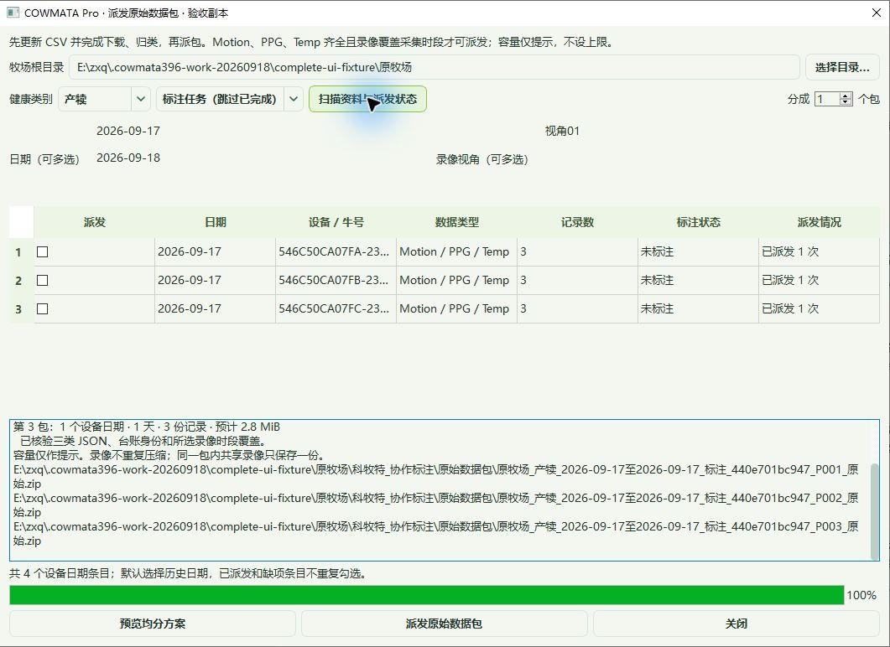
Computer Use 隔离验收：三个完整包生成后，重扫显示已派发且默认取消勾选。图中为测试资料。命名示例：牧场_产犊_2026-09-17至2026-09-18_标注_任务号_P001_原始.zip。复核包带已有标签；回传包带同一任务编号及独立回传编号。
01 · 所有人
先完成一次完整工作流程
帮助 > 新手图文教程…
开始前：安装包完成安装；备好管理员或操作员的登录信息。
- 先阅读“激活与账号”；管理员与操作员均可查看完整教程。
- 准备台账和数据，完成下载或视频归类。
- 打开工程，选择日期、牛只与记录，再选择当前要观察的视角。
- 核对录像和传感器时间，建立标签、查看证据，再保存。
- 管理员按任务导出数据集、训练或导入模型；操作员完成标注并提交成果。
完成后：得到可重新打开的工程与标签；分析结果通过独立输出目录交付。
02 · 所有人
理解管理员与操作员权限
窗口标题；账号菜单
开始前：账号由唯一管理员管理。
- 查看窗口标题中的账号与角色。
- 操作员使用允许的数据准备和标注功能；受限菜单呈灰色或显示权限说明。
- 管理员完成数据集、模型与分析任务，并从“账号 > 账号管理…”维护操作员账号。
完成后：能分辨功能不可用是权限限制，还是尚未选择数据。
03 · 所有人
管理员登录与操作员首次激活
启动 COWMATA Pro
开始前：联网；管理员备好账号和密码，操作员另需管理员发放的授权码。
- 在登录身份中选择“管理员”或“操作员”。
- 管理员填写账号和密码登录，无需授权码；可以在其他电脑使用同一管理员账号。
- 操作员首次登录填写账号、密码和授权码；本机激活后，再次登录可填写账号与密码，授权码留空。
- “保存密码”“自动登录”默认均不勾选。只勾选保存密码，下次回填后仍需点击登录；明确勾选自动登录，才会在下次启动时自动登录。
- 忘记密码时点击“忘记密码”；管理员维护电脑可查看或修改本机账号 CSV，其他电脑联系管理员。密码修改或授权撤销后重新核验。
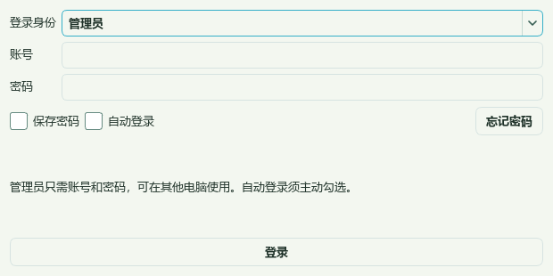
管理员登录界面示意：只需账号和密码。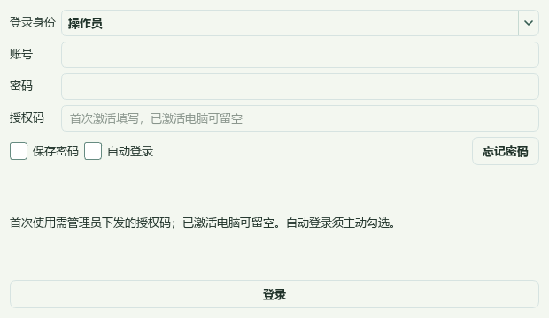
操作员登录界面示意：首次需填写账号、密码和授权码。完成后：成功进入与账号角色对应的工作界面。
04 · 管理员
管理员批量发放与撤销账号
账号 > 账号管理…
开始前：已使用唯一管理员账号登录。
- 在“生成数量”设置需要的账号数，点击“批量生成”。
- 选中要分发的账号行，点击“复制所选”，仅将对应一行交给指定使用者。
- 账号表保留“账号、密码、授权码”三列；管理员授权码为空，操作员未用过的授权码可按需分发。
- 需要撤销时，选择对应账号并点击“删除所选”，核对账号后确认。唯一管理员不能在此删除。
- 在管理员维护电脑可使用“打开本机 CSV”；关闭旧表格窗口后重新打开，避免旧缓存覆盖三列表。
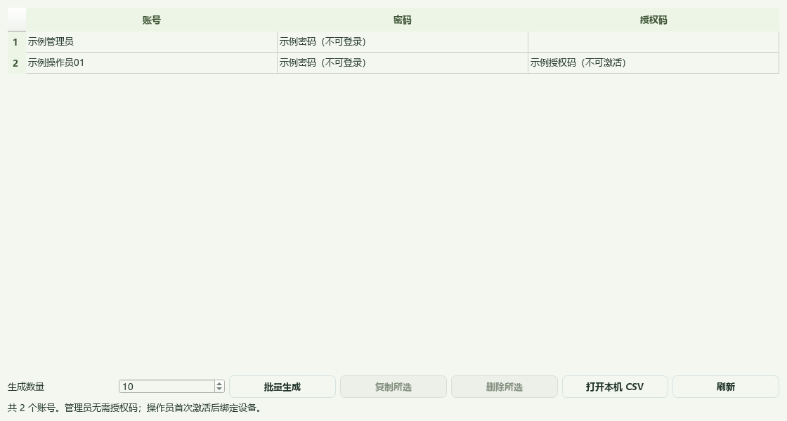
账号管理界面示意：全部为不可登录的示例信息。完成后：操作员使用自己的账号；被删除账号在服务核验后失去访问权限。
05 · 所有人
打开按日期组织的工程
文件 > 打开工程…（Ctrl+O）
开始前：牧场目录中已有归类后的传感器 JSON 或视频。
- 选择牧场或数据工程目录。
- 核对采集类别、数据类型与日期。
- 展开素材列表，选择一份记录，核对牛耳标、设备和现场记号。
- 勾选当前需要的录像视角；等待对应时段检索结果。
完成后：波形显示该记录，录像按统一参考时间定位。
06 · 所有人
从单份 JSON 或单个视频开始
文件 > 打开九轴…；文件 > 打开单个视频并配对九轴…
开始前：具有可读取的原始 JSON 和正常播放的视频。
- 从“打开九轴…”选一份 JSON，核对解析出的记录信息。
- 以视频为起点时使用“打开单个视频并配对九轴…”，按提示选择配对的九轴。
- 确认画面和曲线后再做时间同步。
完成后：当前文件进入标注工作台。
07 · 所有人
保存、继续与安全退出
文件 > 保存（Ctrl+S）；文件 > 保存并退出
开始前：已有工程或人工标注。
- 使用“保存”写入当前人工成果。
- 完成一份记录时使用“完成本份九轴…”，按提示核对并保存。
- 退出时选择保存并退出；若后台仍在保存或停止任务，等待其完成。
- 下次打开原工程检查记录进度和已保存标签。
完成后：保留标签、当前位置及工程进度。
08 · 所有人
使用旧工程兼容入口
文件 > 旧版兼容
开始前：备好旧单视频工程副本。
- 旧工程导入使用“导入旧单视频工程…”。
- 需要旧界面时使用“打开旧版单视频窗口”。
- 导入后逐项核对来源、时间映射和标签，不用旧文件名推定同步正确。
完成后：旧工程可继续检查；原文件作为回退依据保留。
09 · 所有人
按三份台账选择性下载
数据准备 > 端侧数据下载…
开始前：准备扬大测试设备台账.csv、扬大产犊登记汇总.csv、样本试验台账.csv；服务器连接可用。
- 重新读取台账，查看“可下载、待补全、不下载”的记录及原因。
- 核对产犊开始、产犊结束、九轴、脉搏、温度五列均有值。
- 九轴与温度都有效的记录才允许下载，下载内容包含 Motion、PPG、Temp。
- 确认牧场与监测目的分类后开始同步；自动同步仅在程序运行时执行。
- 后续补全台账后再次同步，软件在每轮开始时重新审核。
完成后：只下载满足当前台账条件的记录，并按监测目的归类。
10 · 所有人
同时归类多个视频总目录
数据准备 > 数据归类… > 常规数据归类
开始前：正常可播放的视频；已确定牧场、类别和复制/移动方式。
- 选择牧场目录、类别和归类方式。
- 点击“重新选择目录…”打开 Windows 系统文件夹选择器；按 Ctrl 或 Shift 可选择多个总目录。继续增加来源时点击“追加目录…”，选错时点击“清空目录”。
- 等待后台逐步列出各目录视角，勾选要处理的项目并核对归档视角。
- 点击“一键归类”，在状态和记录中查看正在处理、完成和异常项。
- 需要中止时点击暂停；保留同一任务设置后继续。
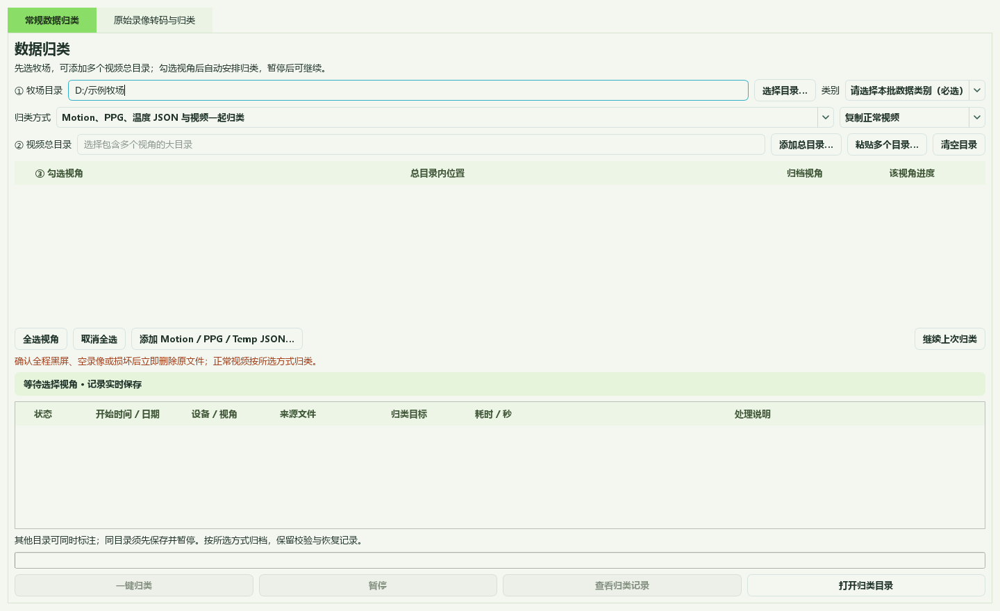
常规归类界面示意：先指定牧场，再加入一个或多个来源目录。完成后：按类别、日期、视角输出时间戳视频。
11 · 所有人
查看、恢复与核对归类记录
数据准备 > 数据归类…
开始前：已有归类任务。
- 打开“查看归类记录”，按视角查看每份文件的来源、目标和说明。
- 暂停后使用继续上次归类；确认牧场、类别、时间范围和视角没有误改。
- 使用“打开归类目录”核对实际 MP4 文件。
- 修改了目标或归类条件时，按提示建立匹配的新任务，不复用旧目标。
归类记录入口位于底部；暂停后核对任务设置再继续。完成后：任务记录与实际输出可逐条对应。
12 · 所有人
将原始录像转为标准 MP4
数据准备 > 数据归类… > 原始录像转码与归类
开始前：可读取的 DAV/DHAV 文件、目录或录像机原盘。
- 选择文件/目录来源；录像机原盘使用盘符下拉列表和“刷新原盘”。
- 选择输出牧场与类别；按需填写北京时间范围和跨午夜按天拆分。
- 点击“扫描原始录像”。Channel 01–20 自动对应视角01–20；无来源的视角不接入。
- 用“核对已选通道缩略图”确认通道内容。
- 点击“开始转码并归类”，完成后打开归类目录并检查任务记录。
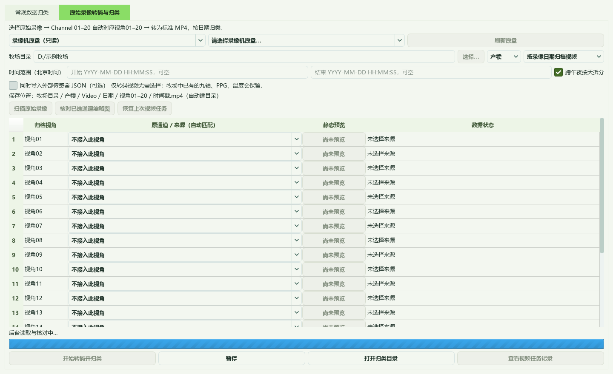
原始录像准备界面示意：扫描后核对通道与归档视角。完成后：输出路径形如“牧场/产犊/Video/日期/视角01/日期_时-分-秒.mp4”。
13 · 所有人
扩大录像检索与刷新素材
数据准备 > 更多数据准备工具 > 录像索引
开始前：已打开工程。
- 当前时刻找不到画面时，先选择“扩大当前检索”。
- 需要扫描整个工程时使用“完整索引…”，可用“暂停检索”停止后台检索。
- 新文件复制完成后使用“刷新素材”（F5）。
- 仍有异常时打开“素材核验…”查看文件与时间信息。
完成后：区分尚未检索、文件缺失和时间未匹配。
14 · 所有人
核验拷贝批次和录像归档
数据准备 > 更多数据准备工具 > 录像索引
开始前：原工程和待核验副本可读取。
- 新一批拷贝使用“新建拷贝批次…”区分来源。
- 需要验证内容时选择“内容核验…”；它会读取完整文件，等待任务完成。
- 核对外部录像副本时使用“归档核验…”，选择对应归档目录。
- 检查每项结果和异常说明。
完成后：得到内容身份和归档副本的核验记录。
15 · 所有人
导出标准 MP4 副本
数据准备 > 更多数据准备工具 > 导出标准 MP4 副本…
开始前：已选定需要处理的正常录像。
- 选择需要核查时长的原始录像。
- 选择“另存标准 MP4 视频画面副本”的目标文件。
- 等待帧数与时长核验完成，查看完成提示，再播放输出 MP4。
完成后：生成独立标准 MP4 副本。
16 · 所有人
在 20 个视角中保持清晰观察
主界面 > 素材；观察 / 多视角 / 波形
开始前：已加载包含多个视角的工程。
- 在素材中勾选本次观察的最多 8 个视角。
- 使用视角分组切换或调整勾选，翻看其他视角。
- “观察”突出主视角；“多视角”同时对照；“波形”在信号上方显示可拖动的小画面。
- 双击或使用放大控件查看单路，Esc 恢复。
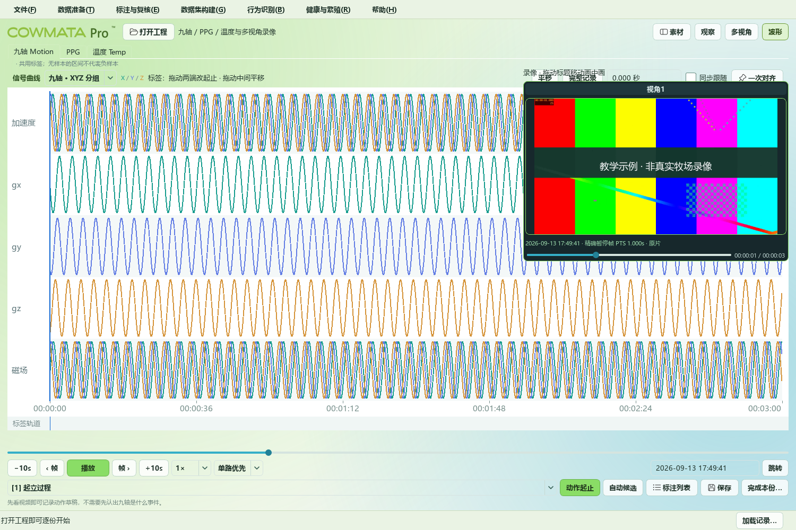
布局教学示例：画中画可拖动；示例信号与测试画面不是真实标注。完成后：切换布局保留参考时间，不把 20 路挤进同一画面。
17 · 所有人
查看九轴、PPG 与温度曲线
主界面 > 九轴 Motion / PPG / 温度 Temp
开始前：对应数据类型的 JSON 可读取且归属明确。
- 选择记录后切换三个数据页。
- 在九轴页选择分组查看加速度、角速度与磁场。
- 缩放或拖动波形，Ctrl+Shift+F 显示完整记录。
- 核对参考时间和缺口，再对照同一事件标签。
完成后：三类数据按共同标签和对应时间显示。
18 · 所有人
完成一次对齐与精细校准
主界面 > 一次对齐；标注与复核 > 时间同步
开始前：录像可显示有效帧；波形中能找到对应动作。
- 点击“一次对齐”，分别移动视频与九轴到同一动作时刻。
- 点击“完成对齐”，检查同步跟随。
- 若后续逐渐偏移，打开“精细校准（可选）…”增加较远的对应点。
- 某个相机单独偏时，使用“相机校准…”核对当前主视角。
- 无覆盖处可用“跳到下一个录像覆盖时段”。
完成后：形成明确的时间映射，之后标签和画面按该映射定位。
19 · 所有人
建立人工标签并修改边界
主界面标签选择；标注与复核
开始前：已核对身份和同步。
- 选择事件类型，在动作开始和结束位置记录区间；瞬时事件只记录时点。
- 从标注列表选择事件，核对波形位置和画面。
- 使用“修改所选标签…”修改类型、边界与备注。
- 多选后使用“批量修改标签…”；需要删除时核对所选条目。
- 用 Ctrl+Z 撤销、Ctrl+Y 重做，再保存。
完成后：标签保留事件编号和人工复核内容。
20 · 管理员
审核 1、2、7、9、A 自动候选
标注与复核 > 自动生成候选…
开始前：已选择完整记录及匹配的数据类型模型。
- 确认当前牛号、记录和模型版本。
- 选择要识别的事件后运行候选预测。
- 点击候选定位波形和录像，逐条接受、调整或排除。
- 完成后保存人工确认的结果。
完成后：候选转为人工审核的标签，提高查找效率。
21 · 所有人
从波形选择区间并确认草稿
标注与复核 > 用所选九轴区间建立候选；标注与证据
开始前：已有有效区间或视频草稿。
- 在波形选择需要检查的区间，创建候选。
- 核对事件、牛号、时间映射和视频到位状态。
- 需要把视频草稿用于九轴真值时，使用“确认所选草稿为九轴真值”。
- 按界面提示处理证据不足，再保存。
完成后：保留草稿与已确认标签的区别。
22 · 所有人
留存并复核多视角证据图片
标注与复核 > 标注与证据 > 留存多视角证据图…
开始前：已选择事件及可用视角。
- 把画面定位到需要留存的时刻。
- 打开留存窗口，检查每个视角的一张图片。
- 人工核对后确认保存。
- 在历史回看中选择该标签，切换“留存证据图”查看。
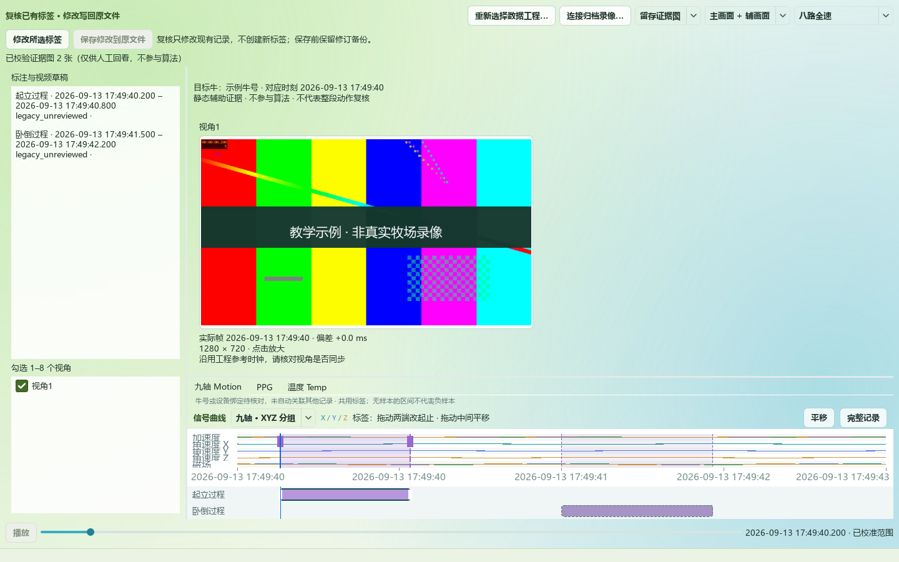
留存证据教学示例：切换证据图，核对选中标签及来源。完成后：图片作为人工回看证据随标注关联保存。
23 · 所有人
回看已有标注与原始录像
文件 > 历史回看…（Ctrl+Shift+O）
开始前：已有标注 JSON 和仍可访问的来源或归档。
- 打开标注文件，检查顶部提示。
- 点击左侧标签，观察曲线定位和“原录像”对应画面。
- 切换“留存证据图”查看与标签关联的图片。
- 原工程移动后使用窗口提供的来源/归档重新连接入口。
- 需要修改时编辑已有标签并保存到原标签文件。
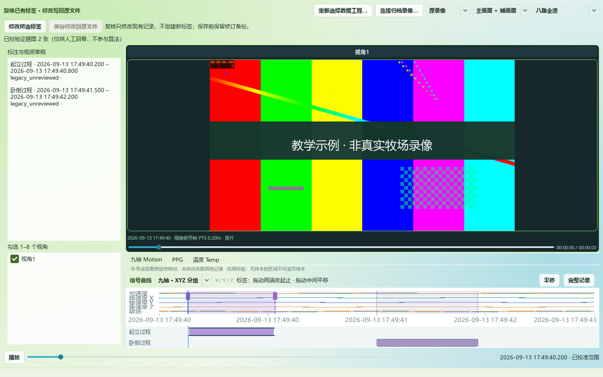
历史回看教学示例：选中标签后，原片定位到对应时刻。留存证据教学示例：切换证据图，核对选中标签及来源。完成后：在原事件位置复核视频、信号和证据，不重新建立标签。
24 · 所有人
完成本份并继续下一份
标注与复核 > 完成本份九轴… / 下一份未完成九轴
开始前：已完成当前记录的人工检查。
- 保存并检查未完成事件。
- 点击“完成本份九轴…”并核对完成内容。
- 选择“下一份未完成九轴”继续。
- 需要返工时选择“重新标注本份”。
完成后：完整记录保留完成状态，返工记录恢复进行中。
25 · 所有人
回传与接收标注成果
标注与复核 > 多人协作
开始前：管理员给出的协作目标与接收目录已确认。
- 在“回传设置…”核对回传目标和身份信息。
- 在副本上完成一份标注并保存，检查回传状态。
- 接收方使用“接收成果…”核对来源与冲突。
- 保留冲突提示，人工判断后合并。
完成后：多人结果以来源记录关联，不根据相同文件名盲目覆盖。
26 · 所有人
调整显示、播放和性能
标注与复核 > 显示与播放
开始前：已打开记录；播放性能可能受磁盘和显卡影响。
- F11 切换全屏；使用素材列表和标注列表开关整理空间。
- 在“界面与播放设置…”调整布局与播放策略。
- 双画面时使用“主视角宽度…”调整比例。
- 遇到卡顿打开“性能诊断…”查看播放器数量和定位统计。
- 必要时切换硬件/软件解码，并按提示重新打开工程。
完成后：保持清晰画面和可操作的标注界面。
27 · 管理员
生成与持续更新完整数据集
数据集构建 > 对应任务数据集
开始前：人工标签及原始记录可读取。
- 选择行为识别、产犊预测、发情预测、怀孕监测或疫病监测数据集。
- 点击“选择来源…”添加对应材料，确认输出总目录。
- 点击“更新完整数据集”；查看“实时记录”中的 Raw/Label 对应与异常。
- 需要停下时暂停，再使用“继续更新”。
- 完成后打开数据集目录，核对清单与配对关系。
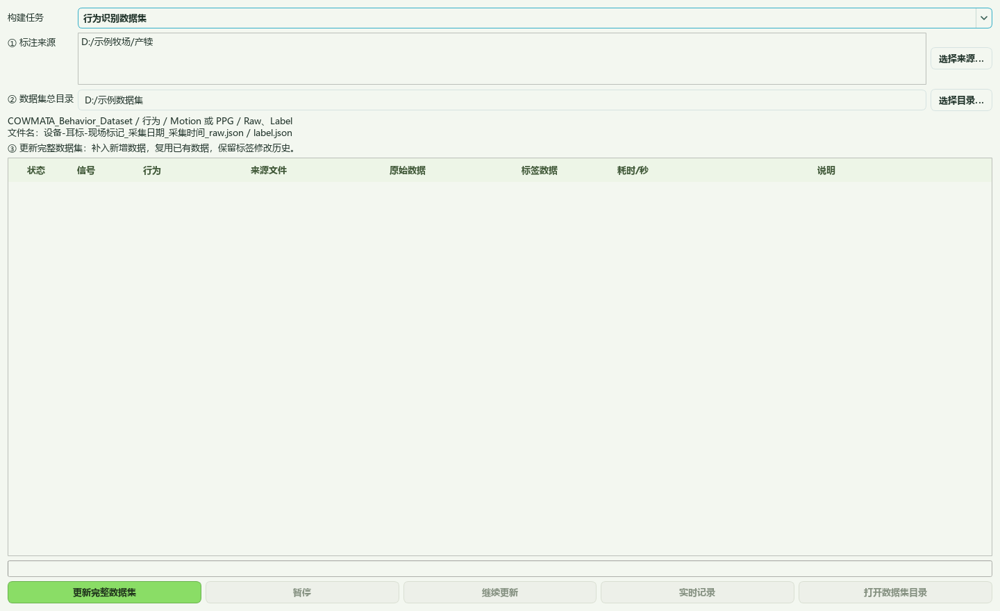
数据集界面示意：添加来源，核对输出总目录，再更新完整数据集。完成后：得到持续更新的数据集；相同内容可复用，标签变更保留追溯。
28 · 管理员
导出完整成果、片段与训练兼容格式
数据集构建 > 标注分享与片段
开始前：已保存标注并确认导出范围。
- “完整成果…”用于当前成果交付。
- “所选片段…”用于选定九轴时间范围及关联标签。
- “训练数据…”用于批量兼容格式导出。
- 完成后在隔离位置重新打开结果，核对记录数、身份、标签和证据。
完成后：得到适合对应交付目的的导出文件。
29 · 管理员
训练并评价一个行为模型
行为识别 > 训练与识别… > 训练
开始前：匹配数据类型的 Raw/Label 数据集。
- 顶部选择行为和数据类型。
- 选择训练数据集，点击“读取全部训练记录”。
- 核对牛号、设备、标签数量及 SHA-256。
- 点击“训练所选算法”，完成后查看历史、评价结果、可视化和数据问题。
- 打开本次结果，保留模型和训练信息。
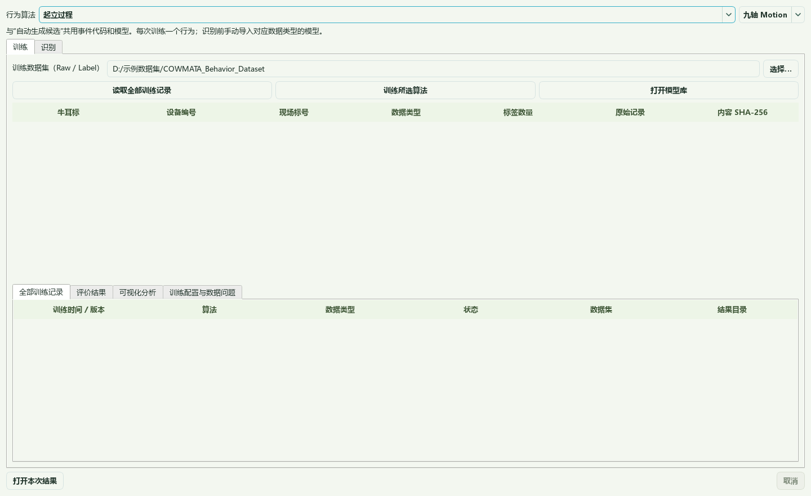
训练界面示意：读取记录后检查评价、结果和数据问题。完成后：生成可追溯的训练结果及留出评价。
30 · 管理员
导入模型并识别数据
行为识别 > 训练与识别… > 识别
开始前：可用模型与匹配类型的原始 JSON。
- 选择目标原始数据目录。
- 点击“手动导入模型…”，选择对应模型清单 suite.json。
- 核对行为、数据类型和模型版本。
- 点击“开始识别所选行为”。
- 打开本次结果，回看候选并记录人工审核结论。
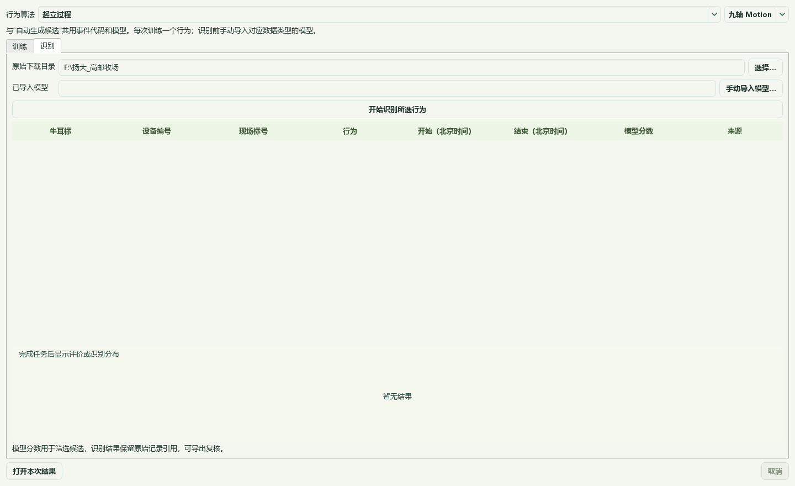
识别界面示意：手动导入匹配模型，再执行识别。完成后：输出该行为的识别候选和结果文件。
31 · 管理员
管理模型库与逐项算法检查
行为识别 > 打开模型库；标注与复核 > 算法管理 / 更多标注工具
开始前：已有模型或已打开记录。
- “算法管理”进入训练与识别工作台；“打开模型库”查看外部保存位置。
- 逐项算法检查中选择事件，检查单摄像头、数据类型和可执行模型状态。
- 执行已支持算法并核对结果；未注册模型的事件以界面提示为准。
- 点击“返回标注布局”恢复原观察方式。
完成后：模型、候选和对应事件保持一致。
32 · 管理员
从一个 JSON 文件夹生成分时段产犊预警
健康与繁殖 > 产犊 > 文件夹滚动预警
开始前：已导入决策模型及其匹配的行为模型；文件夹可包含多日 Motion/PPG/Temp。
- 手动启用该模式，再选择 JSON 文件夹。
- 核对模型、牛号、数据跨度和覆盖情况。
- 点击“开始按时间预测”。
- 按牛查看时间序列、数据覆盖与缺口、连续预警时段。
- 打开本次结果，保存输出 JSON/CSV 并结合现场复核。
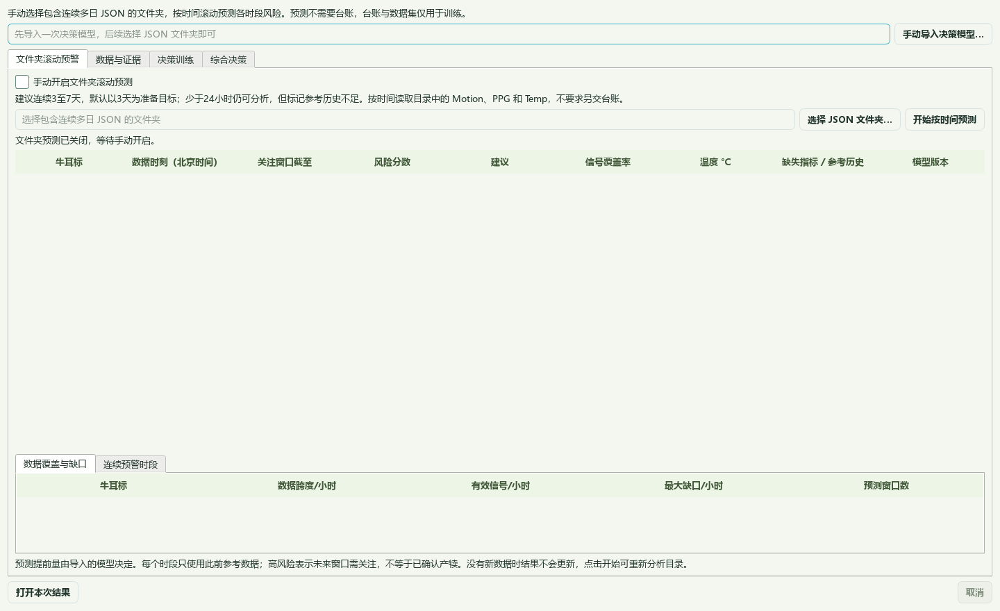
文件夹滚动预警界面示意：由用户手动启用。完成后：按采样窗口与服务器收包后的预测可用时点分别显示分时段结果，不要求同时提交训练数据集或产犊登记。
33 · 管理员
生成综合证据并训练决策模型
健康与繁殖 > 产犊 > 数据与证据 / 决策训练
开始前：管理员具有训练数据、明确产犊结局和已导入行为模型。
- 在“数据与证据”选择来源，刷新已导入行为模型并生成综合证据。
- 在“决策训练”选择证据 JSON 与精确产犊登记 CSV。
- 选择算法和提前量，点击“训练并按牛验证”。
- 查看评价、缺失项和数据问题，再保存模型结果。
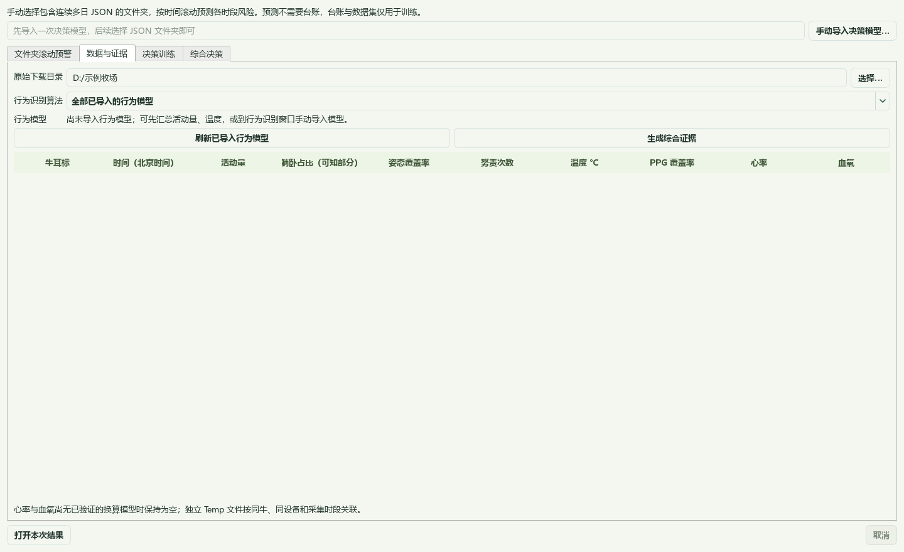
数据与证据界面示意：选择数据与匹配的行为模型。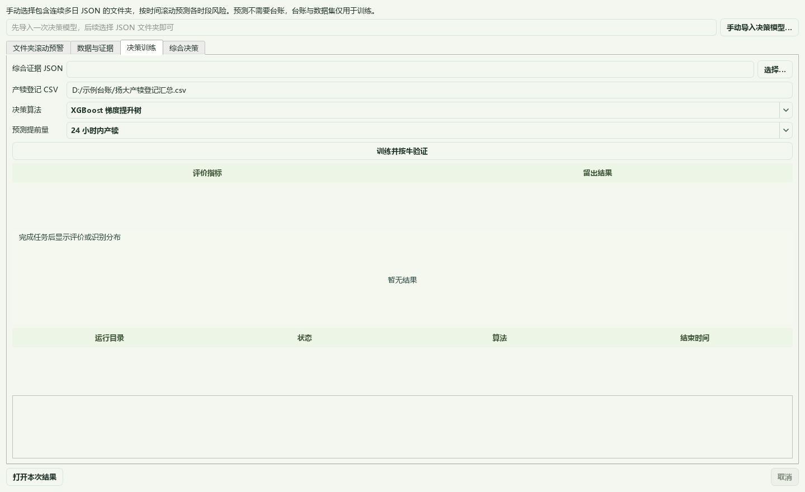
决策训练界面示意：使用有明确结局的数据，核对验证结果。完成后：生成与输入特征、行为模型版本对应的决策模型。
34 · 管理员
导入决策模型并检查结果
健康与繁殖 > 产犊 > 综合决策
开始前：已生成证据与对应决策模型。
- 手动导入 decision.json。
- 选择与模型特征及行为版本匹配的证据。
- 点击“开始综合决策”。
- 按牛查看时段结果，并打开本次结果目录。
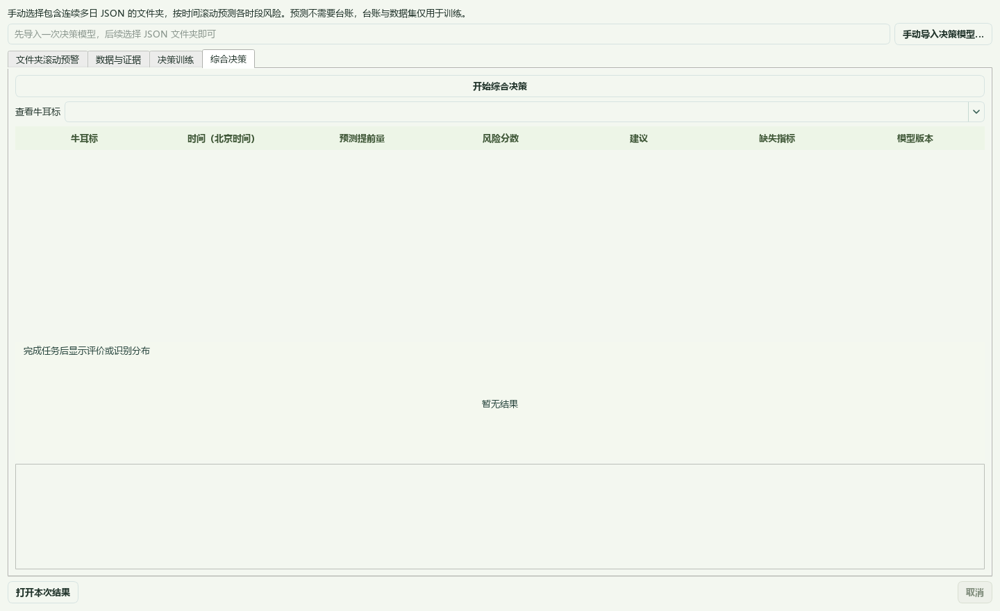
综合决策界面示意：导入匹配模型，查看分时段输出。完成后：获得可追溯的决策输出。
35 · 管理员
了解发情、怀孕与疫病入口的边界
健康与繁殖 > 发情 / 怀孕 / 疫病
开始前：已打开需要检查的数据。
- 选择发情、孕早期、孕中期、孕晚期或疫病入口。
- 查看模型接入状态与数据要求。
- 未注册可执行模型时，返回标注或准备数据集，不生成健康结论。
完成后：准确区分可运行分析与尚未接入的模型功能。
36 · 所有人
查看帮助、版本与更新
帮助 > 快速开始 / 新手图文教程… / 关于
开始前：软件可启动；检查在线更新需要网络。
- F1 打开简短的快速开始。
- 打开本图文教程，用目录或搜索查找任务。
- 在“关于”查看版本、许可证及更新入口。
- 下载更新后先保存并暂停任务，再按提示保存退出并升级。
- 更新失败时查看明确错误，旧版未替换时仍保留；必要时使用官方安装包升级。
完成后：教程、程序版本和发布说明对应。